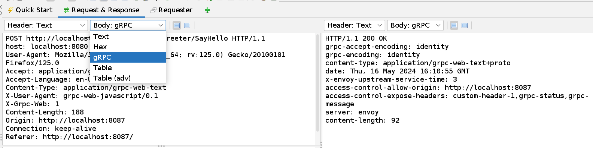
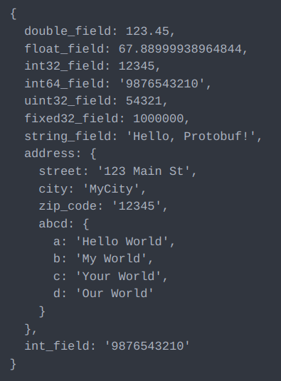

The add-on is still in an early stage, so the range of its functionality is limited. However, you can combine it with existing ZAP functionality to abuse gRPC endpoints in many different ways.
This add-on aims to simplify the testing process by providing tools for:
In the Message View panel, change the Body to gRPC.
When decoding Protobuf messages, it's essential to understand the structure of the decoded data. Protobuf messages consist of fields, each with a field number, wire type, and value. Let's delve deeper into these components:
This is the Base64 encoded form of the binary text received by ZAP.
AAAAAIYJZCZMzMzcXkAVrseHQhi5YCDqrcDlJCixqAM1QEIPADOQSGVsbG8sIFByb3RvYnVmIUJMCgsxMjMgTWFpbiBTdBIGT X1DaXR5GgUxMjMONSIuCgtIZWxsbyBXb3JsZBIITXkgV29ybGQaCllvdXIgV29ybGQiCU91ciBXb3JsZEjqrcDLJA==
On the left side, we have the original message retrieved by the gRPC endpoint in the backend. On the right side, we have the decoded message from the above encoded text, processed by the ZAP gRPC addon.

1D), float (5F), and nested messages (2N).2, the value should be enclosed in double quotes, except for nested messages (2N).2N):fieldNumber:2N::), an open curly brace is placed and start adding nested message fields from new line.You can only edit this Decoded Message in Requester and Manual request editor window simply change the part after ("::") which contain value or you can write new fields by following above mentioned rules.